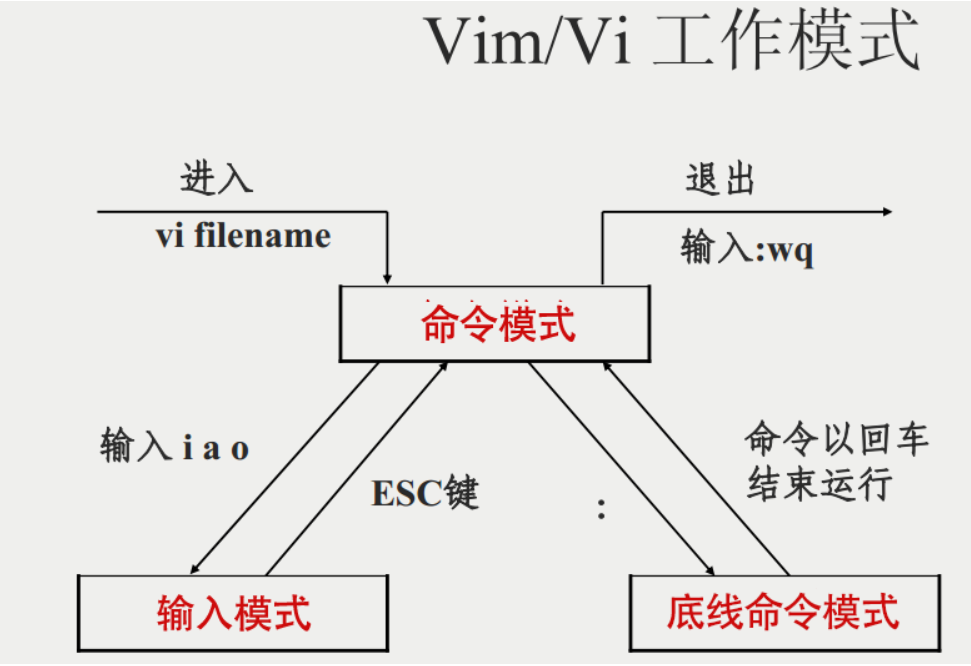

Linux（1-目录文件操作）
Linux 系统目录结构图

- /root：该目录为系统管理员的用户主目录
- /bin（Binary）：存放着最经常使用的命令
- /boot：存放的是启动 Linux 时使用的一些核心文件，包括一些连接文件以及镜像文件
- /dev（Device）：存放的是 Linux 的外部设备，在 Linux 中访问设备的方式和访问文件的方式是相同的
- /ect：存放所有的系统管理所需要的配置文件和子目录
- /home：用户的主目录，在 Linux 中，每个用户都有一个自己的目录，一般该目录名是以用户的账户命名的
- /var：存放着在不断扩充着的东西，习惯将那些经常被修改的目录放在这个目录下，包括各种日志文件
- /lib：存放着系统最基本的动态连接共享库，其作用类似于 Windows 的 DLL 文件，几乎所有的应用程序都需要用到这些共享库
- /usr：用户的很多应用程序和文件都放在这个目录下，类似于 Windows 下的 program files 目录
- /usr/bin：系统用户使用的应用程序
- /usr/sbin：超级用户使用的比较高级的管理程序和系统守护程序
- /usr/src：内核源代码默认的放置目录
- /media：Linux 系统会自动识别一些设备，例如 U 盘、光驱等，当识别后，Linux 会把识别的设备挂载到这个目录下
- /opt：给主机额外安装软件所摆放的目录
- /proc：一个虚拟的目录，是系统内存的映射，可以通过直接访问这个目录来获取系统信息
- /sbin（s 指 Super User）：存放的是系统管理员使用的系统管理程序
- /srv：存放一些服务启动之后需要提取的数据
- /tmp：用来存放一些临时文件
目录操作命令
cd：目录切换
1 | cd / ：切换到根目录 |
ls：目录查看
- -l：以长格式查看文件和目录
- -o：作用同-l，显示除用户组外的详细信息
- -a：查看当前目录下的所有目录和文件（包括隐藏的文件）
- -R：遇到目录要进行递归展开（继续列出目录下面的文件和内容）
- -d：只列出目录，不列出其他内容
- -S/-t：按大小/时间排序
1 | ls：查看当前目录下的所有目录和文件 |
mkdir：创建目录
- -m（mode）：配置文件的权限，不需要看默认权限 (umask) 的脸色
- -p（parents）：直接将所需要的目录（包含上一级目录）递归创建起来
- -v（verbose）：为每一个创建的目录打印一个信息
1 | mkdir aaa：在当前目录下创建一个名为aaa的目录 |
rm：删除目录
- -r 或-R：递归处理，将指定目录下的所有文件与子目录一并处理
- -f：强制删除文件或目录
- -i：删除已有文件或目录之前先询问用户
- -v：打印操作的信息
1 | 删除文件： |
mv：目录修改
- -b：当文件存在时，覆盖前为其创建一个备份
- -f：force 强制，如果目标文件已经存在，不会询问而直接覆盖
1 | 重命名目录：mv 当前目录 新目录 |
cp：目录复制
- -r：代表递归
1 | 贝目录 |
pwd：查看当前目录
文件操作命令
touch：新建文件
语法：touch 文件名
1 | touch a.txt |
rm：删除文件
语法：rm -rf 文件名
1 | rm -rf a.txt |
vi 或 vim：修改文件
切换插入模式
- i：切换到输入模式，在光标当前位置开始输入文本
- a：进入插入模式，在光标下一个位置开始输入文本
- o：在当前行的下方插入一个新行，并进入插入模式
- O：在当前行的上方插入一个新行，并进入插入模式
切换末行模式
- :：切换到底线命令模式，以在最底一行输入命令
- : w：保存文件
- : q：退出 vim 编辑器
- : wq：保存并退出编辑
- : q!：强制退出 vim 编辑器，不保存修改
删除、复制和粘贴
- x：删除当前光标所在处的字符
- D：删除从光标到行尾的所有内容
- dd：删除光标所在的一行
- ndd：删除光标所在的向下 n 行
- yy：复制光标所在的一行
- nyy：复制光标所在的向下 n 行
- p：粘贴剪贴板内容到光标下方
- P：粘贴剪贴板内容到光标上方
- r：替换光标下的字符
- R：进入替换模式，替换当前光标后的内容，直到按 Esc 退出
查找和替换
- /字符串：向下寻找一个名为字符串的字符串
- ?字符串：向上寻找一个名为字符串的字符串
- n：重复上一次搜索，向下查找下一个匹配
- N：重复上一次搜索，向上查找上一个匹配
- :%s/old/new/g：将整个文件中的 old 替换为 new
- :%s/old/new/gc：替换前进行确认
撤销和恢复
- u：撤销上一次操作
- Ctrl+r：重做上一次的操作

命令行模式下的常用命令：
- shift+z+z：保存并退出快捷键
- shift+g：光标跳到最后一行快捷键
- set noreadonly：修改 readonly 形式
查看文件
cat：第一行开始显示
格式：cat [options] 文件名
- -b：列出行号，仅针对非空白行做行号显示，空白行不标行号
- -n：列出行号，连同空白行也会有行号
- -s：将连续的空行压缩为单个空行
1 | cat a.txt |
more：百分比显示
格式：more [options] 文件名
- 空白键：向下翻一页
- Enter：向下翻一行
- b：往回翻页
- q：退出查看
- -数字 n：查看 n 行
- +数字 n：从第 n 行开始看
1 | more a.txt |
less：翻页查看
格式：less [options] 文件名
- 上下键：上下翻页
- /字符串：代表在这个显示的内容中，向下搜寻 [字符串] 这个关键字
- ?字符串：代表在这个显示的内容中，向上搜寻 [字符串] 这个关键字
- n：向下找下一个
- N：向上找上一个
1 | less a.txt |
tail：取出文件后面几行
格式：tail [options] 文件名
- -f：实时打印文件内容
- -n 数字 m：显示文件最后 m 行内容
- -c 数字 m：显示文件最后 m 个字符
1 | 显示文件的最后 10 行 |
head：取出文件前面几行
格式：head [options] 文件名
- -n 数字 m：显示文件前 m 行内容
- -c 数字 m：显示文件前 m 个字符
1 | 显示文件的前 10 行 |
查找命令
grep：过滤查找
语法：grep [options] pattern [file…]
- -n：显示匹配行及行号
- -i：忽略字母大小写
- -w：只匹配整个单词，而不是字符串的一部分（如匹配’magic’，而不是’magical’）
- -l：列出匹配文件内容的文件名
- -c：统计匹配成功的行数
- –color：匹配到的关键词会高亮显示
- -r：递归的搜索目录
- -v：排除对应的字符串
- -o：只显示匹配的字符串
- -a（after）：打印搜索的字符串后 n 行的数据
- -b（before）：打印搜索的字符串前 n 行的数据
- -c（both）：打印搜索的字符串前后 n 行的数据
1 | grep -l 'oldboy' /oldboy/* |
管道符结合
1 | 查找指定 ssh 服务进程 |
find：目录查找
find 默认搜索当前目录及其子目录，并且不过滤任何结果（返回所有文件）
语法：find 目录 参数 文件名称
参数：
- -name <查询方式>：按照指定的文件名查找模式查找文件
- -user <用户名>：查找属于指定用户名所有文件
- -group <用户组>：按文件所属组查找文件
- -size <文件大小>：按照指定的文件大小查找文件
- -type <文件类型>：按文件类型查找，可以是 f（普通文件）、d（目录）、l（符号链接）等
1 | find /usr/tmp -name 'a*'：查找/usr/tmp目录下的所有以a开头的目录或文件 |
- -iname：按照文件名搜索，不区分文件名大小
- -size [±] 大小：按照指定大小搜索文件
- -atime [±] 时间：按照文件访问时间搜索
- -mtime [±] 时间：按照文件数据修改时间搜索
- -ctime [±] 时间：按照文件状态修改时间搜索
- -perm 权限模式：查找文件权限刚好等于“权限模式”的文件
- -perm -权限模式：查找文件权限全部包含“权限模式”的文件
- -perm +权限模式：查找文件权限包含“权限模式”的任意一个权限的文件
locate
格式：locate [选项] [参数]
- -A：显示匹配所有模式的文件，可使用多个匹配值选择要查找的文件
- -b：只能匹配文件名，有绝对路径的情况下不进行匹配
- -c：只显示文件数量
- -i：匹配不区分大小写的文件
locate 指令无需遍历整个文件系统，查询速度较快，因为是去搜索一个数据库（/var/lib/mlocate/mlocate.db），可以很快速的搜寻某个路径，默认每天自动更新一次，所以使用 locate 命令查不到最新变动过的文件，为了避免这种情况，可以在使用 locate 之前，先使用 updatedb 命令，手动更新数据库。由于 locate 指令基于数据库进行查询，所以第一次运行前，必须使用 updatedb 指令创建 locate 数据库
1 | updatedb |
与 find 的区别：
- locate 命令查找文件在数据库中查找，查找的速度非常快，几乎是马上列出结果；而 find 命令查找时则是直接查找硬盘上的文件，查找的速度相应的非常慢
- locate 需要先 updatedb 才能找到文件；而 find 不需要
whereis
whereis 命令是定位可执行文件、源代码文件、帮助文件在文件系统中的位置，这些文件的属性应属于原始代码、二进制文件或帮助文件
1 | whereis ls：将和ls文件相关的文件都查找出来 |
which：环境变量
which 命令的作用是在 PATH 变量指定的路径中，搜索某个系统命令的位置，并且返回第一个搜索结果
1 | which pwd #查找 pwd 命令所在路径 |
压缩文件操作
- Linux 中的打包文件：aa.tar
- Linux 中的压缩文件：bb.gz
- Linux 中打包并压缩的文件：.tar.gz
- Linux 中的打包文件一般是以.tar 结尾的，压缩的命令一般是以.gz 结尾的。
一般情况下打包和压缩是一起进行的，打包并压缩后的文件的后缀名一般.tar.gz。
tar
- 压缩命令：tar [-zcvf] 打包压缩后的文件名 要打包的文件
- 解压命令：tar [-zxvf] 压缩文件
- z：调用 gzip 命令进行压缩和解压
- c：打包文件
- v：显示运行过程
- f：指定文件名
- x：代表解压
1 | tar -cvf test.tar abd.txt bcd.txt |
rar
gzip/gunzip
- gzip 文件：压缩文件（不会保留原有的文件）
- -c：将压缩数据输出到标准输出中，可以用于保留源文件
- -r：把目录下的所有文件都压缩，而不是把这个目录压缩（不能打包）
- gunzip 文件.gz：解压缩文件
1 | gzip abc.txt |
zip/unzip
- zip [选项] 文件.zip 要压缩的文件：压缩文件和目录
- -r：递归压缩，即压缩目录
- unzip [选项] 文件.zip：解压缩文件
- -d <目录>：指定解压后文件的存放目录（如果不指定 -d 参数，默认解压到当前目录下）
1 | 压缩文件 |
本博客所有文章除特别声明外，均采用 CC BY-NC-SA 4.0 许可协议。转载请注明来源 爱编程的小生！

评论